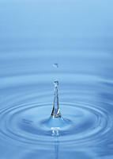

70 % de la surface de la planète est couverte par les océans mais seulement 3% de l’eau sur terre est douce, dont 88 % sont stockés dans les glaces des pôles. L’humanité ne peut accéder facilement qu’à 0,3% de l’or bleu, indispensable à sa survie. Sans compter que cette eau douce est répartie de façon très inégale selon les pays. 23 d’entre eux s’accaparent les 2/3 des ressources mondiales tandis que dans 26 autres, 250 millions d’habitants souffrent de pénuries graves.
Les cours d’eau ne représentent que 0,001 % environ du volume total de l’eau douce sur terre. Ressource naturelle fragile, l’eau est la base de toute forme de vie .
|  | On en tire profit pour différents usages qui sont interdépendants :
En mouvement perpétuel au travers du « cycle de l’eau », les écosystèmes d’eau douce (eaux courantes, zones humides, grands lacs, glaciers et calottes polaires) sont la clé du bon état de cette ressource. Ils rendent de nombreux services écologiques, donc économiques, tels que l’épuration de l’eau, son stockage, la régulation des inondations, la production de nourriture, la conservation de la biodiversité ainsi que des fonctions récréatives |
L'eau est un joyeux en péril. Des menaces grandissantes pèsent sur les ressources en eau douce. La croissance démographique, l’intensification des activités économiques et l’amélioration générale du niveau de vie se sont traduits par un renforcement de la concurrence pour cette ressource limitée et par l’intensification des conflits d’usages au détriment des écosystèmes.
La préoccupation des hommes pour leur environnement est relativement nouvelle. Jusqu’au tout récent sursaut de conscience qui nous agite aujourd’hui, l’humanité a usé de la nature, allègrement et sans compter, aménageant largement les cours d’eau, rejetant sans scrupules effluents et déchets et drainant sans complexe et de façon systématique les zones humides.
Les fleuves et les rivières comptent parmi les milieux ayant le plus souffert des activités de l'homme. 25% des cours d'eau d'Europe occidentale et méridionale sont pollués à un niveau extrême. 50% des zones humides françaises ont disparu au cours des 30 dernières années. Depuis 20 ans, les eaux brutes, c’est à dire les eaux qui n’ont pas été « potabilisées » pour la consommation humaine, se dégradent de façon inquiétante. En cause : une politique agricole productiviste abusant des nitrates et des pesticides, la violation des réglementations en vigueur, un immense laxisme vis-à-vis du respect des seuils de production industrielle autorisés, une police de l’eau déficiente…